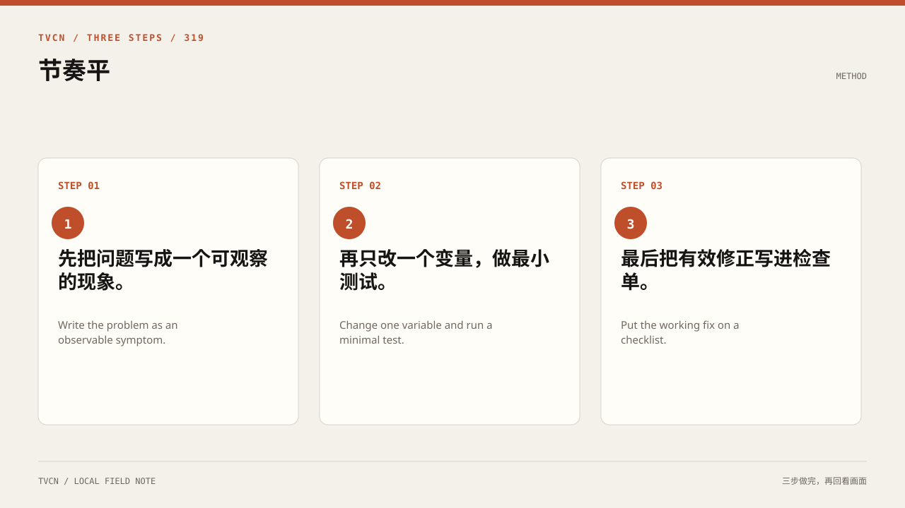

现场
连续三个同长度镜头就改一个：长、短、长；让观众有呼吸。
怎么做
- 把一场戏的镜头长度列出来，避免连续三个一样长。
- 在信息点前缩短，在反应点后留长。
- 用动作和声音做节拍，不要每刀都卡音乐。
别踩
别靠全程快剪；没有呼吸，观众会累。
DIAGRAM / Method card
三步流程

三种原因
针对“节奏平”，先按三个方向排查；每次只改一个变量，改完录 30 秒对比，看变化跟着哪个环节走。
| 原因 | 现场信号 | 5 分钟验证 |
|---|---|---|
| 每个镜头一样长 | 观众感觉像在看幻灯片 | 把每 10 秒的信息变化标出来 |
| 没有反应镜头 | 只有动作，没有人物对动作的态度 | 在每个动作后补一个反应 |
| 音乐匀速 | 音乐从头到尾一个强度，画面没有呼吸 | 让音乐在转折点进退 |
现场诊断
- 关掉音乐看一遍，标出每 10 秒观众知道了什么新信息。
- 数每个场景的镜头数和平均时长；如果都一样，节奏一定平。
- 找三个可以停 1 秒的地方：动作完成、台词落地、反应出现。
修法
节奏不是把镜头剪短，而是让信息有增有减。先让动作切，再让停顿承担压力。
- 用动作切：开门、放杯、转身，动作完成点就是切点。
- 把空镜缩短到只保留信息的一秒；不要用空镜填时长。
- 在每个转折前留一个停顿，让观众预期下一句。
- 音乐只在转折点进入或退出，不要全程铺满。
失败案例
处理“节奏平”时，下面三种做法会更糟；先选一个替换动作，别同时改三个变量。
| 失败做法 | 为什么会更糟 | 替换动作 |
|---|---|---|
| 全部加速 | 观众来不及读画面，只剩晕 | 只缩短没有信息的镜头 |
| 每句都切 | 切点太密，表演被切碎 | 让一个动作跨两个镜头 |
| 用音乐硬推 | 音乐到了，画面没有变化 | 先改画面信息，再加音乐 |
验收表
验收不是“感觉好了”，是这四项都能指认、能回放、能记录。
| 验收项 | 通过线 | 记录 |
|---|---|---|
| 前 30 秒 | 至少有 3 个信息变化点 | 逐段标记 |
| 镜头长度 | 不是每个镜头同一长度 | 统计时间线 |
| 停顿 | 至少有一个 1 秒停顿承担压力 | 回放转折段 |
| 音乐 | 音乐有进入和退出，不全程满 | solo 音乐轨 |
图片说明：本页封面、图解与步骤图是编辑示意或结构图，不是本页实测照片，也不能当作器材测试证据；AI 辅助生成的图会在图注标出。判断器材或画面，以正文的测试条件与现场记录为准。